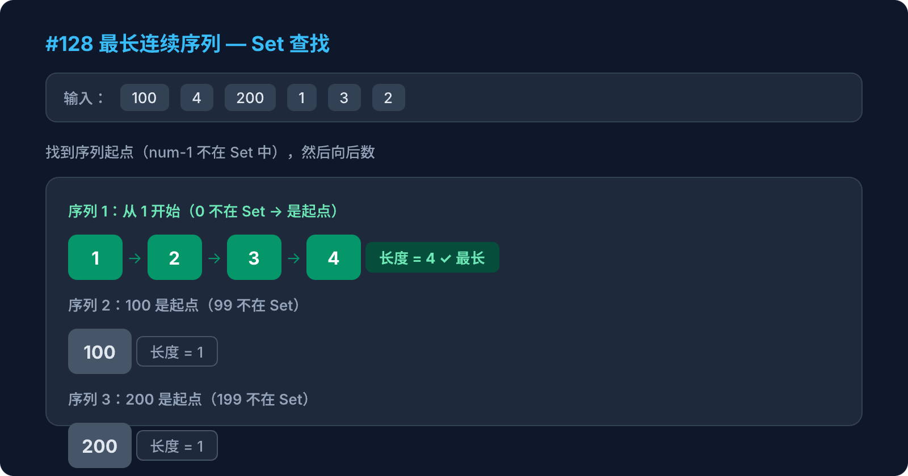

Hot 100 · 哈希表 · 第1周

给定一个未排序的整数数组 nums，找出数字连续的最长序列（不要求序列元素在原数组中连续）的长度。
要求：时间复杂度 O(n)
输入：nums = [100, 4, 200, 1, 3, 2]
输出：4
解释：最长连续序列是 [1, 2, 3, 4]，长度为 4为什么不能排序？
点击每一步展开详细说明
用 new Set(nums) 把数组去重并存入 Set。
Set 的 has() 查找是 O(1) 的，这是关键。
const set = new Set(nums)
// Set: {100, 4, 200, 1, 3, 2}怎么判断一个数是序列的起点？
num - 1 不在 Set 中，那 num 就是某个连续序列的起点。
比如对 [100, 4, 200, 1, 3, 2]：
1 → 0 不在 Set → 是起点2 → 1 在 Set → 不是起点，跳过3 → 2 在 Set → 不是起点，跳过4 → 3 在 Set → 不是起点，跳过100 → 99 不在 Set → 是起点200 → 199 不在 Set → 是起点找到起点后，依次检查 num+1、num+2... 是否在 Set 中，记录长度。
// 起点 num = 1
1 → set.has(2) ✓ → len=2
2 → set.has(3) ✓ → len=3
3 → set.has(4) ✓ → len=4
4 → set.has(5) ✗ → 停止，长度=4每次从起点数完后，用 Math.max 更新全局最长长度。
maxLen = Math.max(maxLen, len)
// 起点100: len=1, maxLen=1
// 起点1: len=4, maxLen=4
// 起点200: len=1, maxLen=4
// 最终结果：4如果不找起点，直接对每个数都往后数，会怎样？
function longestConsecutive(nums) {
const set = new Set(nums)
let maxLen = 0
for (const num of set) {
if (!set.has(num - 1)) { // 是起点
let current = num
let len = 1
while (set.has(current + 1)) {
current++
len++
}
maxLen = Math.max(maxLen, len)
}
}
return maxLen
}for + while 两层循环，看起来像 O(n²)，但实际上每个数字最多只被访问 2 次：一次在 for 循环判断是否是起点，一次在 while 循环中被延伸到。所以总时间仍然是 O(n)。